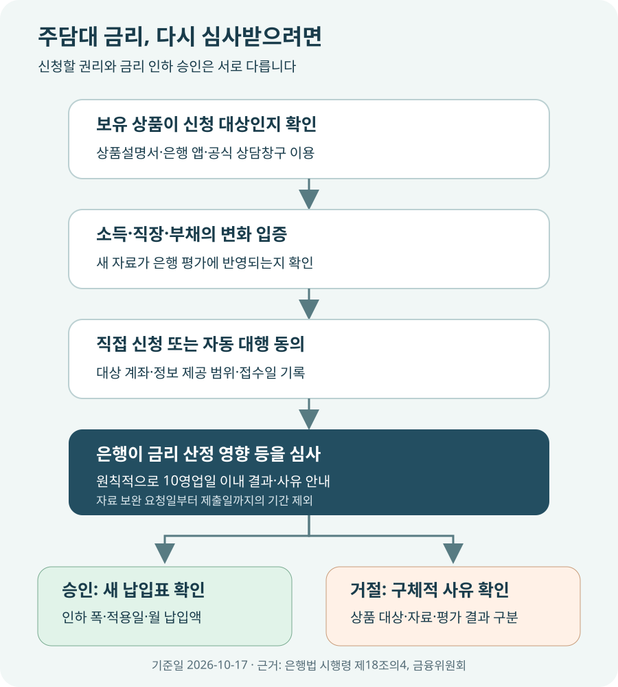

연봉이 올랐는데 주담대 금리도 낮춰 달라고 할 수 있을까?
연봉이 올랐거나 승진·이직·부채 상환으로 신용상태가 좋아졌다면, 주택담보대출도 금리인하요구권 신청을 검토할 수 있습니다. 핵심은 내 대출금리에 개인의 신용상태가 반영되는지입니다. 담보대출이라는 이유만으로 전부 제외되지도, 연봉이 올랐다는 이유만으로 반드시 승인되지도 않습니다. 상품설명서의 대상 여부를 확인하고 달라진 소득·부채 자료를 제출한 뒤, 결과와 사유를 확인하세요. 은행은 원칙적으로 요청을 받은 날부터 10영업일 이내에 수용 여부와 사유를 알려야 하며, 자료 보완을 기다리는 기간은 제외됩니다.
‘다른 은행이 더 싸다’보다 ‘내 상환능력이 좋아졌다’가 출발점입니다
주담대를 받은 뒤 연봉은 올랐는데 대출금리는 그대로라면 아쉽습니다. 이때 기존 은행에 신용상태가 달라졌으니 금리를 다시 산정해 달라고 요청하는 제도가 금리인하요구권입니다. 새 대출을 받거나 대출은행을 바꾸는 것이 아니라 현재 이용 중인 대출에 대해 재심사를 요청하는 일입니다.
은행법 제30조의2에 근거한 권리이며, 은행법 시행령 제18조의4는 개인의 취업·승진·재산 증가·개인신용평점 상승 등 신용상태 개선을 신청 사유로 정합니다. 여기서 신용상태란 단순히 앱에서 보이는 점수 하나가 아니라 소득과 부채 등 돈을 갚을 능력을 평가하는 사정을 포함합니다.
기준금리가 내려갔거나 다른 은행의 신규 대출금리가 더 낮다는 사실만으로 이 제도의 요건을 충족하는 것은 아닙니다. 시장금리 변화는 약정한 기준지표와 재산정 주기로 반영되고, 다른 은행으로 갈아타는 것은 새로운 대출 심사와 비용 비교가 필요한 별도 선택입니다. 먼저 본인의 소득·직장·부채 중 대출 당시 또는 직전 평가 이후 무엇이 달라졌는지를 정리해 보세요.
대출금리는 보통 기준금리 성격의 지표에 가산금리를 더하고 우대금리를 빼서 정합니다. 금리인하요구권이 받아들여져도 시장의 기준지표 자체를 개인별로 낮춰 주는 것은 아닙니다. 재산정 결과 중 어느 부분이 달라지는지, 우대금리 조건은 그대로인지까지 확인해야 이후 고지되는 금리를 이해할 수 있습니다.
주담대라는 이름보다 상품설명서의 ‘대상 여부’를 보세요
금융위원회 안내는 개인의 신용상태를 반영해 금리를 산정하는 상품인지와 신용상태가 개선됐는지를 요건으로 설명합니다. 금융위원회는 금융정책과 제도 기준을 마련하는 정부 기관이며, 실제 신청을 심사하는 곳은 돈을 빌려준 은행입니다. 정부가 제도를 안내했다는 사실과 개별 대출의 승인 여부는 구분해야 합니다.
은행 앱의 대출 상세 화면이나 계약 때 받은 상품설명서에서 금리인하요구권 항목을 찾아보세요. 메뉴가 보이지 않으면 상담창구에 정확한 상품명과 대출계좌를 제시해 대상 여부를 물으면 됩니다. “담보대출은 안 된다”는 짧은 답보다 이 상품은 개인 신용상태를 금리 산정에 반영하지 않는 것인지, 대상이지만 이번 개선 폭이 부족한 것인지를 구분해서 확인하는 것이 좋습니다.
| 내가 알고 있는 조건 | 그 사실만으로 결론 낼 수 있나 | 은행에 확인할 질문 |
|---|---|---|
| 아파트 담보대출이다 | 모든 주담대가 대상인 것은 아님 | 개인 신용상태가 이 상품의 금리에 반영되나요? |
| 고정·혼합형 금리다 | 금리유형만으로 단정하지 않음 | 현재 약정에서 금리인하요구가 가능한가요? |
| 정책·협약에 따라 금리가 정해진 상품이다 | 별도 금리 체계와 대상 여부 확인 필요 | 요구권 대상인가요, 별도의 금리 조정 제도가 있나요? |
| 예금담보대출도 함께 있다 | 대출계좌별로 판단 | 주담대와 예금담보대출 각각 대상인지 알려주세요. |
집값이 올랐다는 이유만으로 주담대 금리가 자동으로 내려가지는 않습니다. 담보가치 변화와 개인의 신용상태 개선은 같은 말이 아닙니다. 재산 증가를 사유로 신청하더라도 해당 은행의 평가와 금리 산정에 실제로 영향을 주는지 심사를 받습니다. “집값이 몇 퍼센트 올랐으니 금리도 얼마 내려간다”는 공통 공식은 없습니다.
연봉이 오른 사실을 은행이 인정할 자료로 준비하세요
연봉협상 결과를 들었다고 은행의 소득정보가 그날 바로 바뀌는 것은 아닙니다. 신청 전에 기존 평가에 반영된 소득의 기준연도와 금액, 새로 인정받을 수 있는 자료를 물어보세요. 원천징수영수증이나 소득금액증명, 재직·직위 확인 자료, 급여명세서 등 가운데 무엇을 받는지는 은행과 신청 사유에 따라 달라집니다. 아래는 준비 방향을 잡기 위한 예시이지 모든 은행의 필수서류 목록은 아닙니다.
| 달라진 상황 | 준비를 검토할 자료 | 접수 전에 확인할 점 |
|---|---|---|
| 연봉·사업소득 증가 | 원천징수영수증, 소득금액증명, 은행이 인정하는 최근 소득자료 | 인상분을 현재 소득으로 인정할 수 있는지 |
| 승진·이직·취업 | 재직증명서, 직위·발령 확인자료, 소득 증빙 | 직장·직위 정보와 인정 소득이 갱신됐는지 |
| 다른 대출 상환 | 상환확인서, 현재 부채내역 | 신용정보와 은행 심사에 상환분이 반영됐는지 |
| 신용평점·재산 개선 | 변화 내역, 필요한 자산 증빙 | 해당 상품의 금리를 바꿀 요인인지 |
예를 들어 연봉이 6천만원에서 7천만원으로 올랐더라도 새 연봉계약서만 받는지, 최근 지급 내역이 더 필요한지, 이미 그 소득이 기존 평가에 반영돼 있는지에 따라 결과가 달라집니다. 은행 내부 신용등급이 달라지지 않았거나 이미 금리 산정상 가장 유리한 구간이라면 소득이 늘어도 추가 인하 폭이 없을 수 있습니다. 반대로 앱에서 자동 수집한 자료가 오래됐다면 보완 자료로 다시 확인할 여지가 있습니다.
은행별로 “연봉 몇 퍼센트 인상”, “신용점수 몇 점 상승” 같은 동일한 승인선을 기대하지 마세요. 외부 신용평가회사의 점수와 은행 내부 평가도 같지 않습니다. 앱의 점수가 올라간 화면만 보내기보다 은행이 판단에 사용하는 정보가 무엇이고 언제 기준인지 확인하면 불필요한 재신청을 줄일 수 있습니다.
잔액 3억원에서 0.2%포인트 낮아지면, 첫 달 이자는 약 5만원 줄어듭니다
절감액은 승인된 인하 폭과 실제 남은 원금, 적용 기간에 따라 달라집니다. 잔액 3억원의 연 금리가 4.5%에서 4.3%로 내려간다고 가정하면 차이는 0.2%가 아니라 0.2%포인트입니다. 원금이 일정하다는 단순 비교에서는 3억원 × 0.002 = 연 60만원, 이를 12개월로 나누면 월 약 5만원의 이자 차이가 납니다.
| 대출잔액 | 가정한 인하 폭 | 원금 불변 시 1년 이자 차이 | 월 환산 이자 차이 |
|---|---|---|---|
| 1억원 | 0.1%포인트 | 10만원 | 약 8,333원 |
| 3억원 | 0.2%포인트 | 60만원 | 5만원 |
| 5억원 | 0.3%포인트 | 150만원 | 12만5천원 |
계산 예시이며 실제 승인금리·평균 인하 폭이 아닙니다. 연 이자 차이 = 잔액 × 인하 폭, 월 환산 = 연 차이 ÷ 12. 원금 불변·동일 금리 차이 1년 유지 가정입니다. 실제 은행의 일수 계산과 적용일에 따라 달라집니다.
원리금균등상환 대출은 이자만 내는 것이 아니므로 월 이자 감소액과 월 납입액 감소액이 같지 않습니다. 남은 기간 30년, 잔액 3억원, 매월 같은 금액을 내는 조건에서 연 4.5%의 월 납입액은 약 152만56원, 연 4.3%는 약 148만4,614원으로 차이는 약 3만5,442원입니다. 은행이 변경 금리와 남은 만기로 재계산하는 단순 가정이며 실제 납입표를 확인해야 합니다.
승인 안내를 받으면 인하 폭뿐 아니라 적용 시작일과 다음 이자 납입일을 함께 기록하세요. 신청한 날부터 소급 적용된다고 가정하거나 인하 전후 서로 다른 기간의 고지액을 그대로 비교하면 절감액을 잘못 계산하기 쉽습니다. 인하가 확정되기 전 예상 절감액을 생활비 예산에서 먼저 빼지 않는 편이 안전합니다.

은행에 직접 신청하거나, 동의 후 자동 신청 서비스를 이용할 수 있습니다
직접 신청하려면 대출은행의 공식 앱·인터넷뱅킹에서 금리인하요구권 메뉴를 찾거나 영업점에 문의합니다. 대출계좌와 신청 사유를 고르고 요구하는 자료를 제출한 뒤 접수일·보완 요청·결과 통지를 보관하세요. 같은 은행에 주담대와 신용대출이 함께 있어도 계좌별 대상 여부와 결과가 다를 수 있으니 한 계좌의 승인으로 모든 대출이 바뀐다고 생각하면 안 됩니다.
신청을 계속 챙기기 어렵다면 마이데이터 기반 자동 신청을 검토할 수 있습니다. 마이데이터 사업자는 본인 동의를 받아 여러 금융회사에 흩어진 자산·대출 정보를 모아 보여 주는 서비스를 운영합니다. 여기에 금리인하요구 대행 동의를 하면 선택한 대출에 대한 요청을 대신 진행하는 방식입니다. 개인의 대출정보를 연결하는 서비스이므로 편리함뿐 아니라 동의 범위와 해지 방법도 읽어야 합니다.
금융위원회는 2026년 2월 25일 발표에서 다음 날인 2월 26일부터 이 서비스를 시행한다고 안내했습니다. 발표 당시에는 사업자 한 곳을 골라 가입·자산 연결·대상 계좌 선택·대행 동의를 하는 절차를 제시했습니다. 정기 신청은 최대 월 1회이며 명확한 신용 개선 사유가 있으면 수시 신청도 가능하도록 안내했습니다. 대행 사업자 변경은 동의일부터 90일 경과 후 가능하고 동의 의사는 연 1회 재확인하는 내용입니다.
이는 당시 발표 기준의 운영 안내입니다. 현재 이용 가능한 사업자와 금융회사, 내 상품의 연결 여부는 이용하려는 앱과 한국신용정보원 마이데이터 종합포털에서 다시 확인하세요. 한국신용정보원은 금융권 신용정보를 집중·관리하는 기관으로 이 포털에서 관련 서비스 정보를 제공합니다. 자동 신청에 동의해도 대상이 아닌 대출을 대상 상품으로 바꾸거나 은행의 심사를 생략하지는 못합니다.
‘최대 월 1회’는 모든 은행이 매달 신청된다는 뜻이 아닙니다. KB국민은행의 2026년 4월 안내는 금융회사별 주기가 다르고 KB는 신청일부터 3개월 단위로 정기 신청한다고 설명합니다. 이 역시 KB 사례이므로 내 대출은행의 실제 주기와 수시 신청 조건을 확인하세요.
직접 신청은 개선 사유와 자료를 구체적으로 설명하기 좋고, 자동 신청은 정기적인 요청과 결과 이력을 챙기는 수고를 덜 수 있습니다. 자동 신청을 켰다면 결과 알림과 서류 보완 요청까지 확인하세요. 모르는 전화나 문자 링크로 신분증·인증번호·계좌 비밀번호를 보내지 말고, 평소 사용하는 공식 앱에서 접수 여부를 확인하는 것이 좋습니다.
거절되면 ‘왜 안 됐는지’에 따라 다음 행동이 달라집니다
은행은 요청을 받은 날부터 10영업일 이내에 수용 여부와 그 사유를 알려야 합니다. 다만 자료 보완을 요청한 날부터 제출일까지는 이 기간에서 빠집니다. 달력으로 열흘을 세는 것과 다르므로 결과가 늦다면 접수일과 보완 진행 상황을 먼저 확인하세요. 연락 방법은 전화·서면·문자·전자우편 등일 수 있으니 앱 알림만 기다리지 말고 등록 연락처도 확인합니다.
금융위원회의 2023년 2월 제도 개선안은 불수용 사유를 세분화하고 소비자가 원하면 신용도 평가에 활용된 정보내역을 제공하도록 개선하는 방향을 제시했습니다. 거절 안내가 짧다면 다음과 같이 구체적으로 물어보세요. 은행의 내부 평가모형 전체를 요구하기보다 내 신청에서 확인할 사실을 좁혀 묻는 것이 실용적입니다.
- “이 대출은 제도 적용 대상이 아닌가요, 대상이지만 인하가 안 된 건가요?”
- “이번 평가에는 어느 연도의 소득과 어떤 부채내역이 반영됐나요?”
- “내부 신용등급이 그대로인지, 이미 적용 가능한 금리 구간인지 설명해 주세요.”
- “추가로 제출할 수 있는 자료와 앞으로 재신청을 검토할 변화는 무엇인가요?”
신청 뒤 더 최근의 소득자료가 생겼거나 타행 대출 상환이 반영됐다면 보완·재신청 가능성을 확인할 수 있습니다. 반면 자료와 신용상태가 그대로인 채 신청 횟수만 늘린다고 승인 근거가 생기지는 않습니다. 일률적으로 3개월 또는 6개월을 기다리라는 인터넷 설명보다 해당 은행의 공식 안내와 구체적인 거절 사유를 먼저 보세요.
안내와 실제 처리가 맞지 않거나 사유 설명·처리가 지연되면 접수내역과 답변을 모아 은행 소비자보호 창구에 문의하고, 해결되지 않으면 금융회사를 감독하고 금융민원을 처리하는 금융감독원에 상담·민원을 검토할 수 있습니다. 거절 자체가 곧 위법이라는 뜻은 아니며 인하를 보장받는 절차도 아닙니다.
오늘은 대출 상세 화면과 최근 소득자료부터 확인하세요
- 계좌별 상품명을 적습니다. 주담대·전세대출·신용대출을 나누고 잔액·현재 금리·다음 재산정일을 확인합니다.
- 대상 여부를 확인합니다. 설명서의 금리인하요구권 항목과 공식 앱 메뉴를 찾고 불명확하면 은행에 문의합니다.
- 달라진 사실을 정리합니다. 소득 인상, 승진·이직, 부채 상환의 날짜와 은행이 인정할 증빙을 맞춥니다.
- 직접 또는 자동 신청을 선택합니다. 자동 대행은 대상 계좌·정보 제공 범위·동의 철회와 사업자 변경 조건을 읽습니다.
- 결과와 적용일을 남깁니다. 승인 폭과 새 납입표를 확인하고, 거절됐다면 대상·정보·평가 중 이유를 구분합니다.
금리를 낮추려고 필요 없는 금융상품을 새로 가입하거나 비상자금을 모두 써서 다른 빚을 갚는 결정은 별도로 계산해야 합니다. 금리인하로 얻을 수 있는 이익보다 가입 비용이나 자금 부족 위험이 클 수 있기 때문입니다. 신청은 현재 개선된 상태를 평가받는 절차이지, 승인을 위해 지출을 늘리라는 권유가 아닙니다.
공식 자료와 계산 기준
- 국가법령정보센터 — 은행법 제30조의2
- 국가법령정보센터 — 은행법 시행령 제18조의4
- 금융위원회 — 금리인하요구권 운영 개선 안내(2021. 10. 29.)
- 금융위원회 — 금리인하요구제도 실효성 제고방안(2023. 2. 9.)
- 금융위원회 — 마이데이터 기반 금리인하요구 서비스(발표 2026. 2. 25., 시행 2. 26.)
- KB국민은행 KB의 생각 — 금리인하요구권 조건·서류 안내
정보 기준일: 2026-10-17. 일반 은행 주택담보대출 이용자를 위한 정보이며 승인이나 특정 인하 폭을 보장하지 않습니다. 보험·저축은행·상호금융 등은 해당 업권 법령과 안내를 별도로 확인해야 합니다. 계산은 비교용 가정이며 원리금균등 월 납입액은 잔액 × 월금리 ÷ [1 − (1 + 월금리)의 −남은개월수 제곱]으로 산출해 원 단위 반올림했습니다. 실제 금리·일수 계산·원금 상환·적용일·상품 조건은 은행의 변경 약정과 납입표가 우선합니다.
금리가 바뀌면 납입액도 계산해 보세요
- 대출 상환 방식 비교금리·잔액·기간에 따른 납입액 비교
- 주택담보대출 안내대출금리·담보·실행 절차 확인